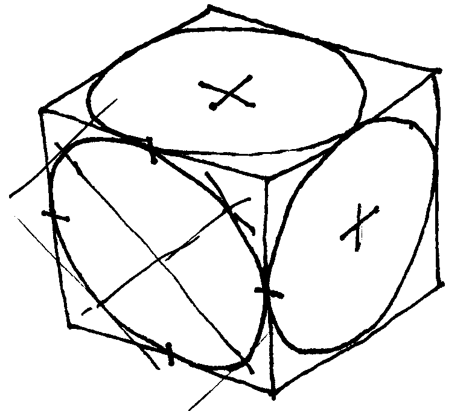
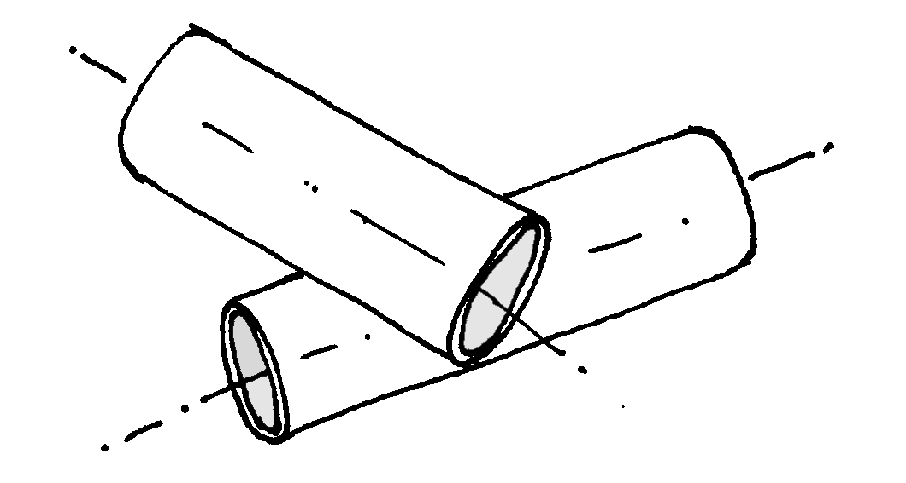
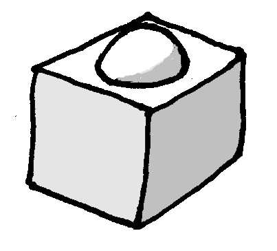
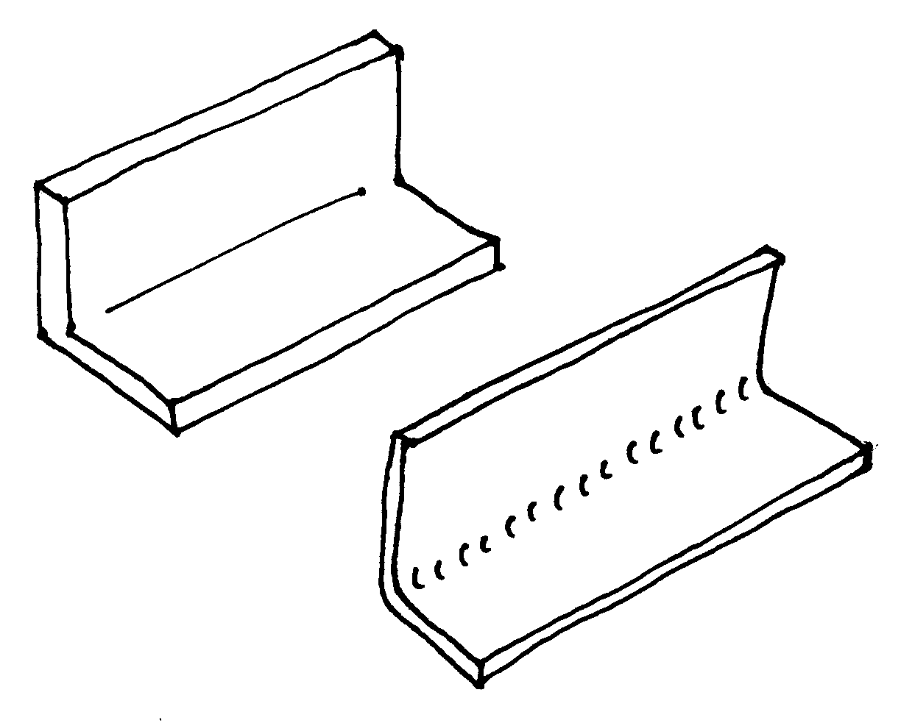
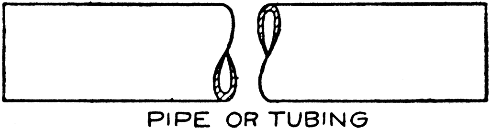

Sketching means quickly jotting down a scene or an idea, without having to think about the medium used.
For most people, this means writing down a quick
hand written note,
or making a quick drawing in pencil
In Bill Buxton's wider definition of "sketching user experiences" a simple mock-up, or a very quick fake of a functionality ( the "Wizard of Oz" experiment ) also qualifies as a sketch, but I would probably call it a prototype.
There is good evidence that current digital drawing interfaces, like keyboards and mice, just do not give a sufficiently intuitive drawing experience. The only way to learn how to draw is with a pencil. A child simply needs the hand-eye coordination to make visceral contact with its own sketches.
To me anyway, the only way to even think about design or structure is to sketch my ideas on paper. It is also the only way I know of, of conveying my ideas to someone else.
Being a bit pedantic I might categorize sketches and hand written notes more as a way of documenting ideas than as a way of creating them. The creating goes on in your head. The text or drawing makes your ideas explicit enough to be looked at, evaluated, modified, and remembered.
But maybe sketching while thinking is a way of expanding your working memory, and the sketch becomes a part of your brain. Viewed like this, sketching may be a design tool after all.
- refer to the story in Delft ( from Polytechnic to University ).
- Delft studieverzameling.
There are many good books on making design sketches by hand, but not everyone has time to read them, and so I am handing down here a few tricks that will eliminate 80% of the beginner's mistakes that everyone makes until someone points them out to you.
True perspective, with vanishing points etcetera, is great for architectural drawings of buildings and rooms, but is is not needed for drawing smaller objects. In fact you can easily draw a whole airplane without it.
The simplest perspective, or projection, uses only parallel lines. This is called orthographic projection. The first figure is a drawing of a cube with circles inscribed on its faces. If we call the three directions along the sides of the cube X, Y and Z, then we can draw the Z axes in the vertical direction, and the other two directioins 30 degrees down from horizontal. This amounts to looking along one of the body diagonals of the cube. The three sides of the cube all lean away from the viewing direction by the same angle, so they are equally foreshortened. In other words, you can draw lengths along these axes all to the same scale. This is why this projection is called "isometric".

isometric projection
There are nicer alternatives, like where the vertical axis is still drawn straight up but not foreshortened, one of the other two axes is drawn more nearly horizontal and also not foreshortened, and the third one is pointing more forward, like maybe 45° down in the picture, and foreshortened by a factor of maybe one half.
This looks more natural, but it takes more conscious effort. For a first effort, the isometric view is great.
There is a dead simple ground rule for drawing circles and tubes in perspective, but it takes a moment to get it.
If you put a circle on a skewer and you look at it from any angle, then the widest point of the circle will be at right angles to the skewer. The circle becomes an ellipse, and the major axis of the ellipse is at right angles to the skewer axis. You can see this with some effort in the circles on the faces of the isometric cube, but it holds in any perspective view.
The figure below shows an example of two tubes lying across each other at some arbitrary angle. The open ends of the tubes ( or the end faces of a closed cylinder ) will always look like ellipses at right angles to the centerline of the tube or cylinder. You can usually guess the appropriate "flatness" of the ellipse. It is not very critical to the impression of the drawing. The common beginner's mistake is to set the ellipse vertical. This looks really awful, without your being able to pinpoint why. Now you know.

tubes at arbitrary angles
Unlike in 2D, three-dimensional sketches look unnatural without some form of shadow. The most natural lighting direction is from top left, probably because right handed people tend to prefer that direction when writing and drawing, so the shadow of their own hand does not obscure their work.
Shadows can have the same color as in the lighted areas, only a shade darker. The figure gives an example.

lighting from top left
Color is particularly useful in 2D sketches. These tend to be more schematic and less naturalistic, and so it becomes harder to distinguish the separations between components. There are various examples of schematic coloring of 2D sketches on this website. One key used there is that fixed bases are dark grey, pushrods are yellow or color coded per function, the insides of tubes are darker than the outsides, etc.
Folds and bending lines can be indicated by a thin line, or by small curved lines. The figure gives examples.

bending lines
Tubes and shafts are hard to recognize in 2D side view, and they are often cut short in drawings to show only the ends on a larger scale. An intuitive way to make the pipes easier to recognize is by making a sine-wave cut, as in the sketch below. A similar cut with straight zig-zag lines can be made for square tubing.

shortened tube